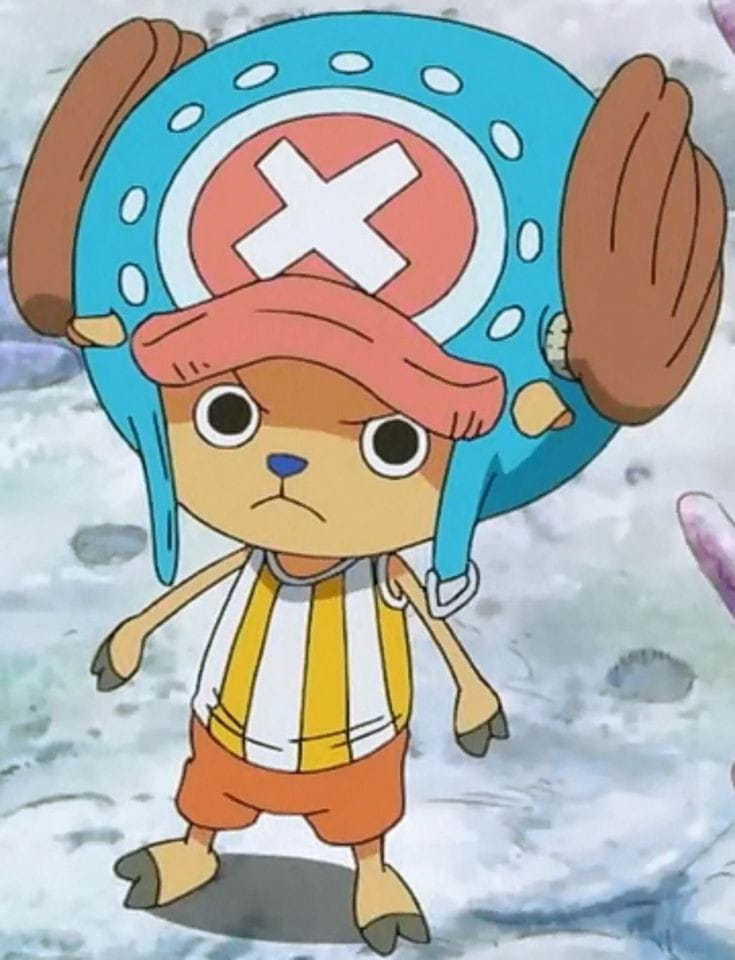
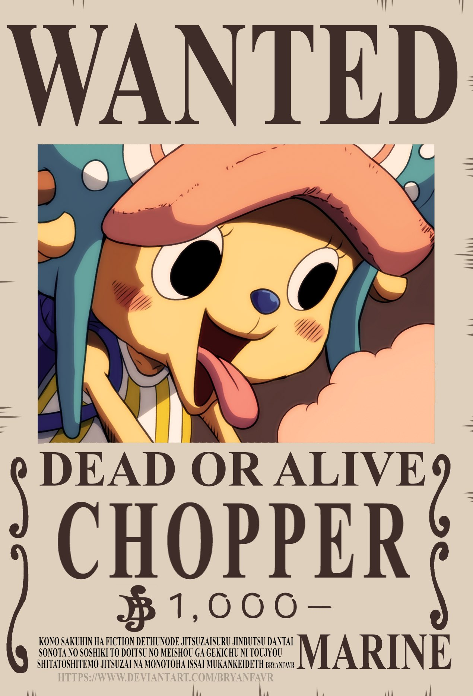
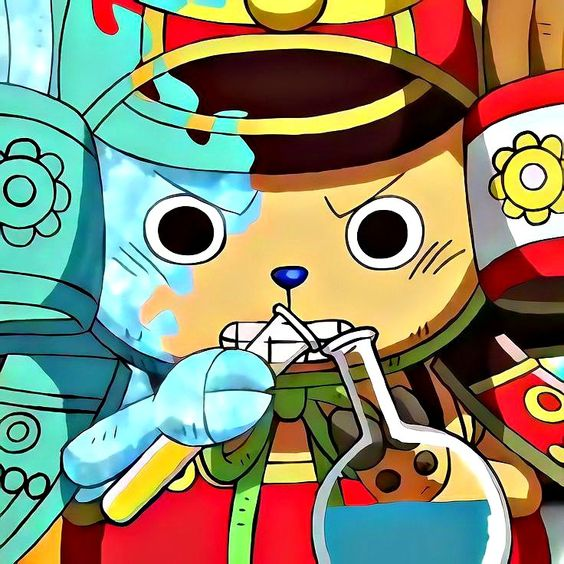
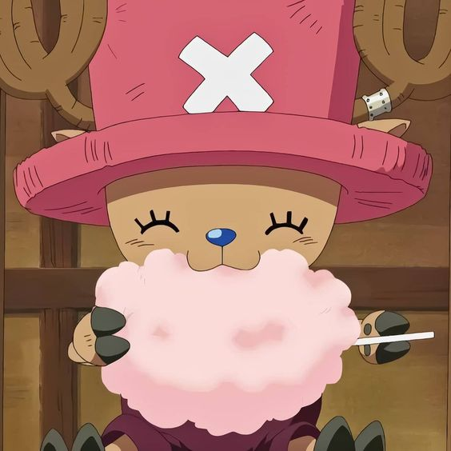

Tony Tony Chopper

{kind=link}
Es un personaje clave en One Piece y miembro de los Piratas del Sombrero de Paja. Es un reno que ha consumido la Fruta del Diablo Hito Hito no Mi, lo que le permite transformarse en una forma híbrida entre reno y humano. Chopper tiene una historia única y conmovedora. Originalmente era un reno común que comió la Fruta del Diablo, lo que le otorgó la habilidad de hablar y pensar como un humano. Fue adoptado por el Dr. Hiluluk, un médico excéntrico, quien le enseñó medicina y le dio un hogar en la isla de Drum.

{kind=link}
Chopper se convirtió en un médico experto y aprendió a usar sus habilidades sobrenaturales para transformarse en diferentes formas, incluyendo una forma humanoide llamada "Brain Point" y una forma gigante llamada "Monster Point" que solo puede usar en situaciones extremas. Chopper es conocido por su personalidad inocente y alegre. Siempre está dispuesto a ayudar a los demás y es muy protector con sus amigos. A pesar de su apariencia tierna y pequeña, Chopper es un luchador valiente y habilidoso, capaz de enfrentarse a enemigos poderosos y contribuir en batallas con su conocimiento médico y sus habilidades de combate.

{kind=link}
Chopper es el médico de la tripulación y utiliza sus habilidades para curar heridas y enfermedades. Lleva consigo una mochila llena de medicamentos y hierbas curativas que utiliza para tratar a los heridos. Además, Chopper es capaz de fabricar píldoras y vacunas que pueden tener efectos milagrosos. A lo largo de la serie, Chopper experimenta un desarrollo personal significativo. A medida que se encuentra con diferentes desafíos y se une a los Piratas del Sombrero de Paja, se vuelve más valiente y confiado en sí mismo. También forja amistades fuertes y se convierte en un miembro querido y respetado de la tripulación. Tony Tony Chopper es un reno que se convierte en un ser humano gracias a la Fruta del Diablo. Es un médico habilidoso, un luchador valiente y un amigo leal. Su historia conmovedora y su personalidad tierna lo convierten en un personaje querido y uno de los favoritos de los fanáticos de One Piece.
{kind=link}